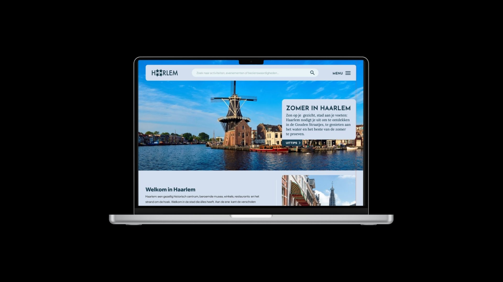

Tijdens mijn stage bij Haarlem Marketing heb ik meegewerkt aan het herontwerpen van meerdere webpagina's voor de website Visit Haarlem. Op basis van eigen onderzoek zocht ik naar de huidige knelpunten binnen de website en maakte ik analyses van vergelijkbare platforms. Aan de hand hiervan stelde ik herontwerpen voor in Figma, voor zowel desktop als mobiel. Daarnaast ontwierp ik de nachtuitagenda met een nieuwe visuele stijl. Het ontwerp staat live op visithaarlem.com.

